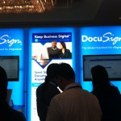
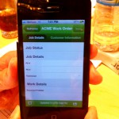

Mrs. Paperless’ Fazit zur BoxWorks
Mein Fazit
Zurück aus San Francisco habe ich für mich noch einmal die Tage dort Revue passieren lassen. Nicht nur von den Box-Kollegen habe ich fachlich wichtige Trends mitnehmen können, sondern auch durch die Gespräche mit vielen verschiedenen Teilnehmern der Konferenz.
Während meiner aktuellen Einsätze bei deutschen Unternehmen habe ich bereits einen Wandel im Denken zu technischen Lösungen feststellen können. Mit der Komplexität großer Lösungen wie Sharepoint und SAP sind Mitarbeiter zunehmend überfordert. Statt direkter Anwendung muss erst einmal viel Zeit (und Geld) in Schulungen gesteckt werden. Auch von einfacher Implementierung, Datenpflege und Datenanwendung scheinen sich diese, wenn auch durchaus professionellen Lösungen, immer weiter zu entfernen. Mir fällt auf, dass die derzeitigen Enterprise-Lösungen die gewünschte Simplizität nicht hergeben und damit der tatsächlichen Arbeitsweise nicht mehr entsprechen. All dies wurde bei der Konferenz bestätigt.
Egal ob Deutschland oder USA, Mitarbeiter sind privat in Sachen Mobilität meist schon weiter als die Unternehmen selber. Mobil arbeitende Kollegen in beiden Ländern wünschen, sich nicht mehr per VPN (Virtual Private Network) oder Citrix Token einwählen zu müssen. Der langsame und komplizierte Vorgang geht zu Lasten ihrer kostbaren Arbeitszeit. Einblicke dazu lieferten mir nicht nur Vorträge, sondern auch die kleinen Interviews, die ich mit Unternehmern vor Ort führen konnte. Alle bestätigten mir, dass ihre Mitarbeiter geradezu nach Cloud-Lösungen schreien. Da iPhone und Co. in den USA noch weiter verbreitet sind als bei uns, ist BYOD (Bring Your Own Device) dort ein sehr starkes Thema.
Allerdings sind nicht immer die Mitarbeiter die Treiber von Verbesserungen. Zwei Interviewpartner, einer von einem US-Krankenkassenverband, der andere von einer Uni, schilderten mir die Probleme in Sachen „Umsetzung des paperless offices“, wie ich sie auch aus Deutschland kenne: Der Mensch ist ein Gewohnheitstier und Neues wird auch von deren Mitarbeitern eher als problematisch denn als nützlich angesehen.
Für mich bleibt also fest zu stellen, dass sich vieles dort mit meinen Erfahrungen hier deckt, und:

-
- In Sachen „paperless“ und technischem Einsatz dazu sind die Amerikaner weiter. Sicherlich auch, da sie viel offener gegenüber Neuem sind. Anzumerken ist dazu natürlich, dass dies zu einer unglaublichen Entwicklungsgeschwindigkeit am US-Markt führt. Und ob das immer so positiv ist?
- Ich durfte viele neue, durchaus auch „schöne“ Apps (wenn man das von einer App sagen kann ;-)) kennenlernen, die den Business-Alltag nützlich erweitern und schon vielerorts eingesetzt werden. Als „schön“ bezeichne ich Apps aufgrund ihres ansprechenden Layouts und ihrer einfachen Bedienung. So zum Beispiel „DocuSign“ oder „RightSignature“, mit denen man einfach und sicher Dokumente signieren und auch ganze Signatur-Prozesse definieren kann, oder auch GoFormz mit dem man einfach und schnell Formulare ausfüllen kann.
- Spannend war für mich als Mrs. Paperless, viele Business-Apps auch im Enterprise-Bereiche im Einsatz zu sehen.

Immer wieder erstaunlich ist für mich, dass das Thema Datensicherheit im Sinne von Datenklau für die Amerikaner kein so großes Thema zu sein scheint. Und nicht erst seit den jüngsten Enthüllungen zu gewissen Behörden wurde mir nochmals negativ klar, dass persönliche Daten in den USA keinen Wert haben, selbst Banken verkaufen Telefonnummern. (Dabei fällt mir auf, ich muss hier unbedingt stärker nachfragen, wovor die Kunden eigentlich genau am meisten Angst haben – dass mangels Datensicherheit Daten im Nirgendwo verschwinden oder geklaut werden.)Für mich ist seit der BoxWorks klar, dass sich die Rolle der IT-Abteilungen in den Unternehmen ändern wird. Die Entwicklung wird weg vom Gatekeeper hin zum Enabler gehen. Und das stelle ich nicht nur fest, weil ich auf einer Cloud-Konferenz war. Die IT-Abteilungen müssen mehr denn je ihre Kollegen mit ins Boot holen und zwar nicht nur die Geschäftsleitung oder die Rechts- und Compliance-Abteilungen. Sie müssen mehr zeitgemäße Lösungen anbieten, statt aus Revierverteidigungsgründen aus zu bremsen. Das Horten ihres Fachwissens wird für ihr „Überleben“ künftig nicht mehr ausreichen. Sorry, IT-Abteilungen, ich habe großen Respekt vor euren Leistungen, aber ich spreche auch die Realität aus!
Alles in allem hat mir die BoxWorks neben viel neuem Fachwissen auch unerwartet viele neue nationale und internationale Kontakte gebracht. Ich hatte nicht damit gerechnet, dass die von mir geschilderte Nachverfolgung per Namensschild-Scan tatsächlich so erfolgreich für mich sein könnte.http://zeitgewinn-hamburg.de/es-geht-auch-ohne-visitenkarten/
Also, liebe Unternehmen, gerne schenkt Euch Mrs. Paperless ihre Zeit! 😉
Weitere Artikel

Gar nicht lean ist auch mal gut
Das schlanke, entschlackte, effiziente Büro ist meine Leidenschaft. Doch vor einiger Zeit habe ich erfahren, dass es manchmal gut ist, nicht lean zu sein, nicht auf die „schlanke Linie“ zu achten. Ich war eingeladen, einen …

Checkliste Reisen und Arbeiten
Immer wieder habe ich gemerkt, dass auf Reisen generell zu viel einpacke, dafür aber wichtige Kleinigkeiten, die das Leben wirklich leichter machen, gern mal vergesse. Da ich immer mehr Arbeiten und Reisen verbinde, kann das …